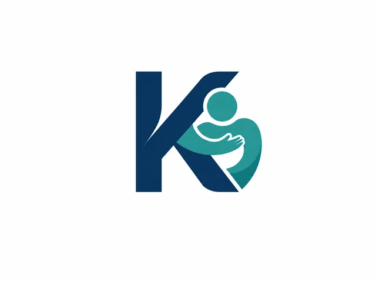
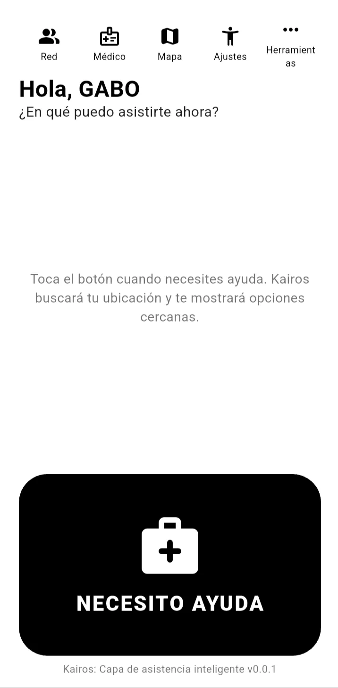
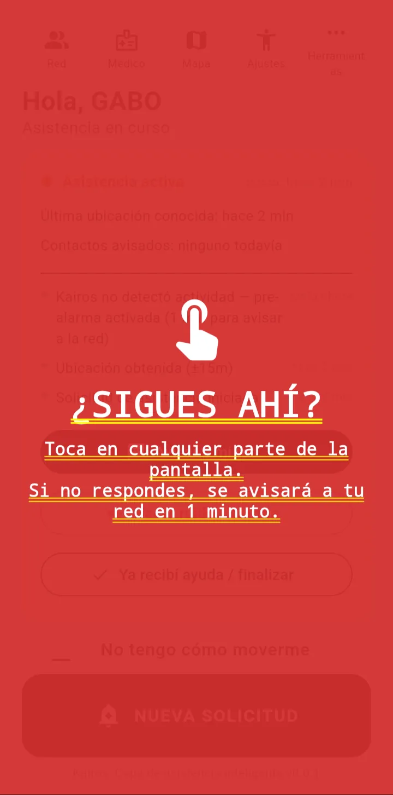
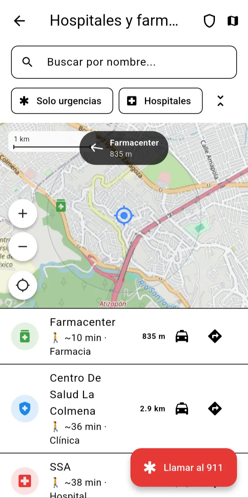
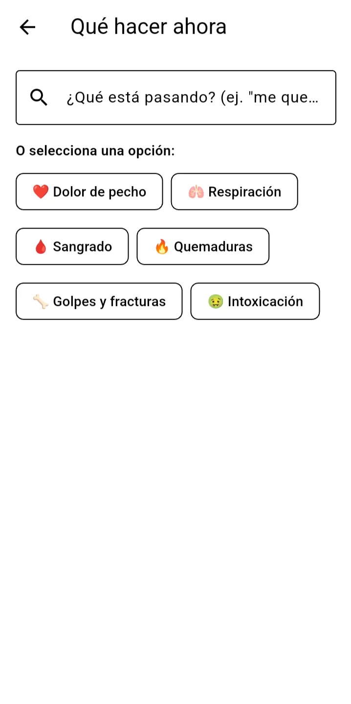
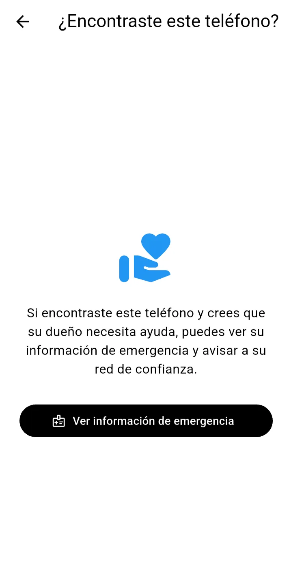

Primeras etapas · Android · Flutter
ASISTENCIA EN EMERGENCIAS PERSONALES — SIN BACKEND, SIN CUENTAS
Una app pensada para el peor momento de alguien: GPS, red de contactos de confianza, recursos de salud cercanos y un Dead Man's Switch que avisa solo si la persona deja de responder. No es un tracker permanente. No es una red social. Todo vive en el teléfono.
Por ahora solo para Android, con mapas y recursos de la Ciudad de México y el Estado de México. Está en sus primeras etapas.
"Hay aplicaciones diseñadas para los días normales. Kairos fue diseñado para los días que nadie quiere vivir."
En pantalla
Cinco pantallas del núcleo de la app — desde pedir ayuda hasta lo que ve quien encuentra el teléfono de alguien más.





Filosofía de diseño
Cinco reglas se repiten, casi palabra por palabra, en el propio código. No son buenas intenciones sueltas: cada una está documentada en el archivo donde aplica, como decisión explícita, no como omisión.
Las emergencias no esperan una conexión estable. Los recursos esenciales viven en el dispositivo: mapas, información crítica y primeros auxilios. Si el mundo se desconecta, Kairos sigue funcionando.
La información médica, la red de confianza, la ubicación y los registros permanecen almacenados localmente. Kairos solo usa internet cuando el usuario decide descargar recursos o actualizar.
En una emergencia, la falsa certeza puede ser peligrosa. Kairos nunca afirma conocer una ubicación que no pudo obtener, ni dice que un mensaje fue recibido cuando solo pudo enviarlo.
Las manos tiemblan. La visión se vuelve borrosa. El tiempo se vuelve crítico. Por eso hay texto ampliado, alto contraste, lectura por voz y controles simples, pensados para momentos de estrés.
Si el usuario activa el Dead Man's Switch y deja de responder, Kairos abre el SMS con ubicación e información médica hacia su red de confianza — pero nunca afirma que el mensaje fue recibido, solo que se abrió el envío.
"Si algún día Kairos deja de respetar cualquiera de estos principios, dejará de ser Kairos." — es el contrato moral que la propia app se impone a sí misma.
El flujo que importa
Este es el único camino de toda la app donde una cadena de eventos corre sin que el usuario vuelva a tocar nada. Todo lo demás — avisar a la red manualmente, resolver la sesión, pedir un viaje — es siempre una acción explícita.
1. El usuario toca "NECESITO AYUDA". Arranca la sesión de asistencia, empieza a monitorear la batería y pide la ubicación GPS.
2. El Dead Man's Switch empieza a contar. Cada toque en la pantalla reinicia el conteo. Es el único mecanismo de toda la app que actúa sin que nadie decida nada en el momento.
3. Si el tiempo se agota sin actividad, Kairos avisa por voz, abre un SMS de borrador para la red de confianza y activa la alarma física — sirena, flash y vibración.
El SMS de alerta nunca se envía solo: se abre como borrador, porque la última decisión de avisar es de una persona. Por eso la alarma física es el respaldo real si nadie puede tocar "Enviar". La única excepción es la ubicación en vivo, que el usuario activa aparte y manda actualizaciones sin abrir el compositor.
Qué hace, por momento de uso
Kairos no se piensa por infraestructura, sino por lo que alguien puede hacer con la app antes, durante y después de una emergencia. Esta lista se revisó contra el código, no contra la documentación.
6 funciones
6 funciones
7 funciones
3 funciones
4 funciones
8 funciones
review_status: verified, y el contenido lo está revisando una médica colaboradora.4 funciones
2 funciones
6 funciones
Qué se sostiene solo
Analizando los imports reales entre los 35 servicios: 19 de ellos no dependen de ningún otro — son las piezas más seguras para tocar primero. En el otro extremo, la sesión activa la importan 6 servicios, la red de confianza 5, y el Dead Man's Switch y la voz 4 cada uno: si una de estas piezas falla, se cae la posibilidad misma de que alguien se entere de la emergencia.
Nota de honestidad: los porcentajes de las barras son criterio de dominio, no una métrica. Además, la ubicación GPS no aparece como dependencia de ningún otro servicio en el conteo puro de imports — pero sin ella, la pantalla principal no tiene qué mostrar. La tabla combina el dato objetivo con criterio de dominio, no una métrica perfecta.
Privacidad por diseño
Todo vive en el dispositivo. No hay servidor propio ni cuenta de usuario que crear. Algunas funciones sí se conectan a servicios externos (por ejemplo, para buscar hospitales cercanos); qué ven y cuándo está en la política de privacidad.
El cifrado se usa solo donde de verdad se justifica: perfil médico y palabra de seguridad van en el almacenamiento cifrado de Android (Keystore). El resto de la app, a propósito, no paga ese costo en cada lectura.
Kairos nunca pide permiso de acceso a los contactos del teléfono. La red de confianza se carga siempre a mano — es una decisión de diseño, no una limitación técnica.
No auto-envía el SMS de alerta — siempre queda como borrador para que una persona decida. La única excepción es la ubicación en vivo: opt-in, apagada por defecto, con su propio interruptor, y solo hacia contactos que ya se avisaron. No enciende la alarma física al pedir ayuda. No genera contenido médico en tiempo real: todo el material offline se revisa fuera de la app antes de entrar. No convierte la bitácora del cuidador en un expediente permanente — se borra sola a las 72 horas.
Permisos de Android
Una app de emergencias necesita permisos delicados. Esta es la lista completa, sacada del manifiesto de la app, con la razón de cada uno. Los que dependen de una función opcional solo se piden cuando la activas. Qué pasa con tus datos, en la política de privacidad.
Para darte tu posición durante una emergencia y buscar hospitales y farmacias cerca. Se pide cuando usas esas funciones.
Para que, con la pantalla apagada, el Dead Man's Switch conserve tu última posición cuando expire. Sin este permiso dejaría de actualizarla justo en el caso que existe para cubrir.
Solo para la ubicación en vivo, que es opcional y está apagada por defecto. El SMS de alerta normal no lo usa: se abre como borrador y tú lo envías. Se pide cuando activas esa función.
Para mantener vivo el conteo del Dead Man's Switch con la pantalla apagada. Android lo muestra como una notificación fija mientras dura la sesión.
Para esa notificación fija y para los recordatorios de medicamentos, el chequeo de inactividad y los check-ins de actividad.
Para la pre-alarma, la alarma de supervivencia y el metrónomo de RCP.
Solo para descargar mapas y recursos, y buscar ayuda cercana cuando hay conexión. No hay servidor propio ni cuentas.
Para retomar los recordatorios y avisos programados después de reiniciar el teléfono.
Solo para el botón físico de pánico. Escucha únicamente las teclas de volumen; no lee lo que hay en pantalla. Lo activas tú en Ajustes de Android, que muestra su advertencia genérica para cualquier servicio de este tipo.
Contactos, cámara ni micrófono. El flash de la alarma funciona sin permiso de cámara. Además, desactiva el respaldo automático de Android, para que el perfil médico y la red de confianza no salgan hacia la nube de Google: el único respaldo es el archivo cifrado que tú exportas.
Stack técnico
GPS y mapa offline-first con tiles .pmtiles propios — sin depender de Google Maps.
Keystore de Android — reservado solo para perfil médico y palabra de seguridad.
Mantiene vivo el proceso durante el conteo del Dead Man's Switch, con la pantalla apagada.
Conectividad real en dos capas: detección de radio y verificación efectiva, no solo "hay wifi".
Los tres componentes físicos de la alarma de supervivencia: vibración, flash estroboscópico y sirena.
Narración por voz, siempre detrás de la preferencia explícita del usuario.
Lo que ya se rompió una vez
Las auditorías del proyecto encontraron y corrigieron fallas reales — algunas del tipo que solo aparece cuando una app tiene que funcionar en el peor momento posible, no en una demo. Esta lista es una muestra, no el inventario completo: el historial entero vive en la documentación del proyecto.
Lo que nunca encontrarás aquí
Una buena arquitectura no solo se define por lo que puede hacer — también por lo que decide no hacer. Privacidad antes que recolección de datos. Resiliencia antes que dependencia. Honestidad antes que apariencia. Utilidad antes que complejidad.
Sin publicidad invasiva. Sin venta de datos personales. Sin funciones esenciales bloqueadas detrás de un muro de pago. Sin mecanismos diseñados para mantenerte más tiempo dentro de la app del que necesitas estar.
Colaboradores
Kairos no genera contenido médico por su cuenta: las fichas del Botiquín Digital se revisan fuera de la app antes de entrar. Esa revisión la hace una persona con formación médica.
Colabora de forma voluntaria revisando el contenido médico de las fichas del Botiquín Digital. Su ayuda hace posible que esa información sea más confiable.
Las fichas se publican solo cuando ella termina su revisión. La responsabilidad final sobre lo que se publica es de Sintaxis G, no de quienes colaboran en redactarlo o revisarlo: la información de Kairos es orientativa y nunca sustituye la atención médica profesional.
Una carta del desarrollador
No comencé este proyecto buscando crear la aplicación más grande ni la más popular. Lo comencé porque creo que la tecnología puede hacer algo más que entretener: puede acompañar, puede orientar, puede reducir la incertidumbre y, en el momento adecuado, puede acercar ayuda cuando más se necesita.
No puedo estar junto a cada persona cuando atraviese una emergencia. Pero sí puedo intentar construir una herramienta que permanezca a su lado cuando yo no pueda hacerlo.
Si algún día Kairos consigue ayudar a una sola persona a encontrar el camino correcto, pedir ayuda a tiempo o tomar una mejor decisión durante un momento difícil, todo este esfuerzo habrá valido la pena.
Software que sigue siendo útil cuando las condiciones reales no son perfectas.